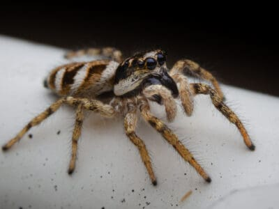

Pajaki to przepiekne male stworzenia o pieknych oczach

Oto przyklad jednego z nich:
Najliczniejszy rząd pajęczaków, należy do niego 50 tys. opisanych gatunków. Są to zwierzęta głównie lądowe, o rozmiarach od 0,5 mm do 12 cm ciała i do ok. 32 cm rozstawu odnóży. Często samice są większe od samców.